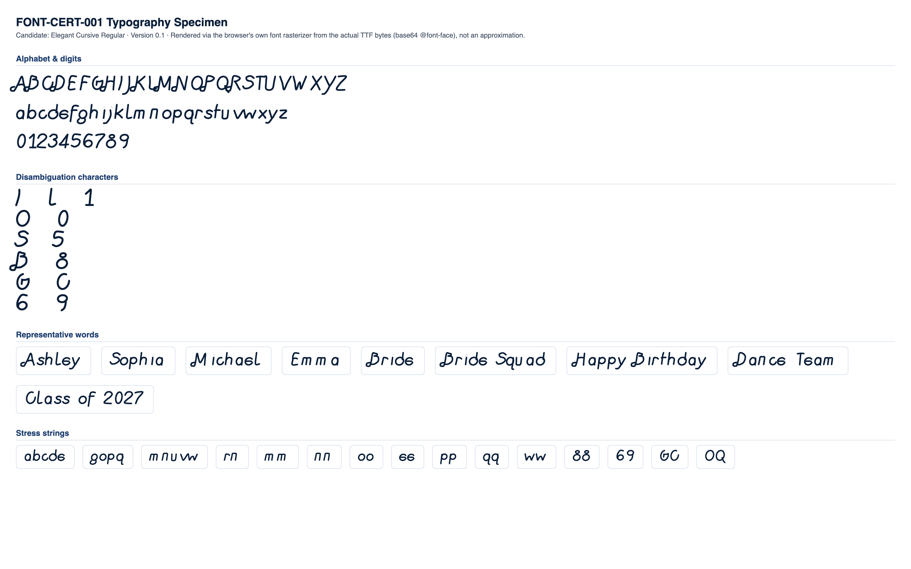
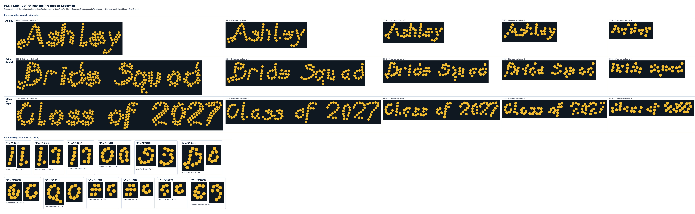

FAIL
| Status | Check | Category | Detail |
|---|---|---|---|
| PASS | Successful TTF parsing | parsing | opentype.js parsed the file without error. |
| PASS | Outline format | structure | CFF (PostScript-flavored) outlines. sfnt signature "OTTO" (OTTO), opentype.js outlinesFormat="cff". |
| FAIL | Quadratic TrueType outlines | structure | The file is CFF-flavored OpenType (sfnt "OTTO"), not TrueType -- it has no quadratic ("glyf") outlines at all; its curves (if any) are cubic Bezier by construction. Sampled across the first 10 required glyphs: 1102 curve commands, 16 line commands. |
| PASS | unitsPerEm | structure | unitsPerEm = 1000 |
| PASS | Glyph count | structure | 71 glyphs (font.numGlyphs=71). |
| PASS | .notdef at glyph index 0 | structure | .notdef confirmed at glyph index 0. |
| PASS | Unicode cmap coverage | coverage | cmap maps 71 Unicode code point(s) to glyphs. |
| PASS | Required character coverage (A-Z, a-z, 0-9, space, . , ' - ! ?) | coverage | All 69 required characters map to a real glyph (glyph index != 0). |
| FAIL | Required sfnt tables | structure | Missing required table(s): glyf, loca. File contains: CFF, OS/2, cmap, head, hhea, hmtx, maxp, name, post (expected for a CFF-flavored OpenType file -- CFF outlines replace glyf+loca with a single "CFF " table, present here.) |
| PASS | Family / subfamily / version / PostScript naming | naming | family="Elegant Cursive", subfamily="Regular", version="Version 0.1", postScriptName="ElegantCursiveRegular". |
| PASS | Ascender, descender, line gap, horizontal metrics | metrics | ascender=700, descender=-230, hhea.lineGap=0, advanceWidthMax=950, numberOfHMetrics=71 (hmtx table present: true). |
| PASS | Invalid or empty glyphs | geometry | No mapped, non-whitespace character resolves to an empty outline. |
| WARNING | Open contours | geometry | 68 of 69 character(s) have at least one contour with no explicit close command whose final point does not exactly return to its start point (gap sizes as % of the font's em square: average 1.69%, max 4.20% -- small precision gaps, not wide-open paths). Largest gaps: "." (42u, 4.2% of em), "j" (37.8u, 3.78% of em), "i" (31.6u, 3.16% of em), "0" (27u, 2.7% of em), "a" (20u, 2% of em). This is a consistent pattern across nearly every glyph, suggesting the source file was authored/exported without closepath operators, not an isolated defect. It is not production-blocking: src/text/OpenTypeProvider.js force-closes every contour during conversion (confirmed -- Part 3's real GeometryEngine.generateTextLayout() calls against this file produce valid StoneLayouts), but it is worth returning to the type designer as a file-hygiene issue. |
| WARNING | Self-intersections | geometry | 55 character(s) show flattened-outline segment crossings: "A" (self:2, cross-contour:6), "B" (self:9, cross-contour:0), "D" (self:4, cross-contour:0), "E" (self:0, cross-contour:2), "F" (self:0, cross-contour:4), "G" (self:3, cross-contour:6), "H" (self:2, cross-contour:4), "K" (self:3, cross-contour:6), "M" (self:5, cross-contour:0), "N" (self:4, cross-contour:0), "O" (self:1, cross-contour:0), "P" (self:5, cross-contour:0), "Q" (self:1, cross-contour:4), "R" (self:3, cross-contour:2), "T" (self:0, cross-contour:4), "U" (self:1, cross-contour:0), "V" (self:1, cross-contour:0), "W" (self:3, cross-contour:0), "X" (self:0, cross-contour:4), "Y" (self:0, cross-contour:12), "Z" (self:2, cross-contour:0), "a" (self:13, cross-contour:21), "b" (self:1, cross-contour:2), "d" (self:4, cross-contour:4), "e" (self:0, cross-contour:2), "f" (self:0, cross-contour:4), "g" (self:1, cross-contour:4), "h" (self:0, cross-contour:2), "i" (self:3, cross-contour:0), "j" (self:6, cross-contour:0), "k" (self:1, cross-contour:4), "m" (self:2, cross-contour:4), "o" (self:1, cross-contour:0), "p" (self:1, cross-contour:6), "q" (self:2, cross-contour:6), "s" (self:1, cross-contour:0), "t" (self:0, cross-contour:4), "v" (self:1, cross-contour:0), "w" (self:11, cross-contour:0), "x" (self:0, cross-contour:4), "y" (self:1, cross-contour:2), "z" (self:2, cross-contour:0), "0" (self:4, cross-contour:0), "1" (self:1, cross-contour:4), "2" (self:1, cross-contour:0), "3" (self:1, cross-contour:0), "4" (self:1, cross-contour:12), "5" (self:1, cross-contour:0), "6" (self:2, cross-contour:0), "7" (self:1, cross-contour:0), "8" (self:2, cross-contour:0), "9" (self:1, cross-contour:4), "." (self:6, cross-contour:0), "!" (self:1, cross-contour:2), "?" (self:1, cross-contour:0). |
| WARNING | Zero-length or duplicate outline segments | geometry | 43 character(s) affected: "A" (zero-length:55, duplicate:1), "B" (zero-length:149, duplicate:0), "D" (zero-length:52, duplicate:1), "E" (zero-length:12, duplicate:0), "G" (zero-length:7, duplicate:0), "H" (zero-length:52, duplicate:1), "K" (zero-length:56, duplicate:1), "M" (zero-length:72, duplicate:2), "N" (zero-length:61, duplicate:2), "P" (zero-length:75, duplicate:3), "R" (zero-length:92, duplicate:3), "S" (zero-length:4, duplicate:0), "U" (zero-length:16, duplicate:0), "W" (zero-length:21, duplicate:0), "Z" (zero-length:9, duplicate:0), "a" (zero-length:100, duplicate:0), "c" (zero-length:10, duplicate:0), "g" (zero-length:16, duplicate:0), "h" (zero-length:6, duplicate:0), "i" (zero-length:130, duplicate:0), "j" (zero-length:79, duplicate:0), "k" (zero-length:1, duplicate:0), "l" (zero-length:32, duplicate:0), "m" (zero-length:115, duplicate:0), "n" (zero-length:40, duplicate:0), "q" (zero-length:68, duplicate:1), "r" (zero-length:40, duplicate:1), "s" (zero-length:47, duplicate:0), "u" (zero-length:21, duplicate:0), "v" (zero-length:18, duplicate:0), "w" (zero-length:138, duplicate:2), "y" (zero-length:12, duplicate:0), "z" (zero-length:13, duplicate:0), "0" (zero-length:8, duplicate:0), "1" (zero-length:7, duplicate:0), "3" (zero-length:16, duplicate:0), "4" (zero-length:6, duplicate:0), "5" (zero-length:6, duplicate:0), "7" (zero-length:5, duplicate:0), "8" (zero-length:459, duplicate:0), "." (zero-length:18, duplicate:0), "!" (zero-length:4, duplicate:0), "?" (zero-length:4, duplicate:0). |
| PASS | Coordinates outside valid TrueType ranges | geometry | All required-character outline coordinates fall within the signed 16-bit range (-32768 to 32767). Note: this file is CFF-flavored, not glyf-based -- the int16 glyf range is a compatibility check only, not this format's native constraint. |
| PASS | Inconsistent or suspicious advance widths / side bearings | metrics | Advance widths for required characters cluster reasonably around the median (583 units). |
Rendered from the actual candidate TTF via a base64-embedded @font-face rule (the browser's own font rasterizer), not an approximation.

Rendered through the real production pipeline: FontManager → OpenTypeProvider → GeometryEngine.generateTextLayout() → StoneLayout. Text height 25mm, gap 0.3mm.

| Pair | Size | Stone counts | Chamfer distance | Result |
|---|---|---|---|---|
| "I" vs "l" | SS16 | 5 / 6 | 0.1286 | PASS |
| "l" vs "1" | SS16 | 6 / 7 | 0.1532 | PASS |
| "I" vs "1" | SS16 | 5 / 7 | 0.1663 | PASS |
| "O" vs "0" | SS16 | 9 / 8 | 0.1104 | PASS |
| "S" vs "5" | SS16 | 11 / 10 | 0.1164 | PASS |
| "B" vs "8" | SS16 | 14 / 8 | 0.1023 | PASS |
| "G" vs "C" | SS16 | 10 / 8 | 0.1396 | PASS |
| "Q" vs "O" | SS16 | 11 / 9 | 0.1376 | PASS |
| "e" vs "c" | SS16 | 7 / 5 | 0.1450 | PASS |
| "e" vs "o" | SS16 | 7 / 5 | 0.2162 | PASS |
| "c" vs "o" | SS16 | 5 / 5 | 0.1297 | PASS |
| "6" vs "9" | SS16 | 9 / 8 | 0.1526 | PASS |
Threshold: 0.09 (normalized, unit-height point clouds). Below threshold = flagged as visually similar.
| Char | SS6 | SS10 | SS16 | SS20 | SS30 |
|---|---|---|---|---|---|
| "A" | 37 | 19 | 10 | 9 | 5 |
| "B" | 42 | 22 | 14 | 11 | 6 |
| "C" | 27 | 12 | 8 | 7 | 4 |
| "D" | 43 | 20 | 14 | 11 | 6 |
| "E" | 26 | 11 | 8 | 7 | 3 |
| "F" | 20 | 12 | 7 | 6 | 5 |
| "G" | 31 | 13 | 10 | 8 | 5 |
| "H" | 34 | 18 | 11 | 9 | 6 |
| "I" | 16 | 6 | 5 | 4 | 3 |
| "J" | 16 | 10 | 7 | 6 | 5 |
| "K" | 33 | 17 | 11 | 9 | 6 |
| "L" | 13 | 8 | 6 | 5 | 4 |
| "M" | 46 | 23 | 14 | 10 | 7 |
| "N" | 47 | 21 | 13 | 9 | 7 |
| "O" | 32 | 13 | 9 | 8 | 6 |
| "P" | 34 | 17 | 10 | 8 | 5 |
| "Q" | 36 | 15 | 11 | 9 | 7 |
| "R" | 44 | 20 | 12 | 10 | 7 |
| "S" | 30 | 14 | 11 | 8 | 4 |
| "T" | 21 | 9 | 7 | 6 | 4 |
| "U" | 35 | 15 | 10 | 7 | 5 |
| "V" | 28 | 13 | 8 | 7 | 4 |
| "W" | 29 | 16 | 11 | 8 | 5 |
| "X" | 20 | 14 | 9 | 9 | 6 |
| "Y" | 28 | 14 | 9 | 8 | 6 |
| "Z" | 33 | 14 | 10 | 7 | 6 |
| "a" | 21 | 9 | 6 | 5 | 3 |
| "b" | 27 | 11 | 8 | 6 | 4 |
| "c" | 17 | 7 | 5 | 3 | 3 |
| "d" | 27 | 12 | 8 | 6 | 5 |
| "e" | 26 | 11 | 7 | 5 | 3 |
| "f" | 25 | 12 | 8 | 7 | 5 |
| "g" | 34 | 16 | 8 | 7 | 5 |
| "h" | 27 | 12 | 9 | 6 | 5 |
| "i" | 12 | 5 | 4 | 4 | 3 |
| "j" | 18 | 9 | 7 | 5 | 4 |
| "k" | 27 | 12 | 8 | 6 | 5 |
| "l" | 13 | 8 | 6 | 5 | 3 |
| "m" | 24 | 15 | 9 | 7 | 4 |
| "n" | 21 | 11 | 7 | 6 | 4 |
| "o" | 21 | 9 | 5 | 5 | 3 |
| "p" | 25 | 12 | 7 | 7 | 4 |
| "q" | 28 | 12 | 8 | 5 | 3 |
| "r" | 10 | 7 | 4 | 4 | 3 |
| "s" | 22 | 10 | 6 | 5 | 4 |
| "t" | 13 | 7 | 6 | 5 | 3 |
| "u" | 21 | 9 | 6 | 5 | 4 |
| "v" | 17 | 8 | 5 | 4 | 3 |
| "w" | 24 | 10 | 6 | 7 | 4 |
| "x" | 15 | 9 | 6 | 5 | 3 |
| "y" | 19 | 11 | 8 | 7 | 4 |
| "z" | 20 | 9 | 6 | 5 | 3 |
| "0" | 29 | 12 | 8 | 7 | 4 |
| "1" | 23 | 11 | 7 | 6 | 4 |
| "2" | 31 | 14 | 10 | 8 | 6 |
| "3" | 25 | 15 | 10 | 7 | 5 |
| "4" | 28 | 11 | 7 | 6 | 4 |
| "5" | 26 | 13 | 10 | 7 | 5 |
| "6" | 31 | 12 | 9 | 6 | 4 |
| "7" | 26 | 12 | 8 | 6 | 5 |
| "8" | 33 | 14 | 8 | 7 | 3 |
| "9" | 25 | 11 | 8 | 6 | 4 |
Cell values are stone count per glyph at that stone size ("coll." = colliding stone pairs found).
x-height measured spread: 67.8 font units across 13 letters (declared OS/2 sxHeight: 438). Cap-height measured spread: 44.5 font units across 26 letters (declared OS/2 sCapHeight: 698).
Visual-weight outliers (fill-ratio vs a-z median 0.409): "a" (1.280), "b" (0.808), "d" (0.845), "g" (0.776), "o" (1.135), "p" (0.738), "q" (0.939).
Baseline anomalies: "f".
Median intra-word (letter-to-letter) ink gap: 101 font units. A word-space is flagged if its own ink-to-ink gap is not at least 1.3× that median (i.e. it reads no wider than an ordinary letter gap).
| Word | Boundary | Gap (units) | vs. median | Result |
|---|---|---|---|---|
| Bride Squad | "e" | "S" | 501 | 4.96× | PASS |
| Happy Birthday | "y" | "B" | 272 | 2.69× | PASS |
| Dance Team | "e" | "T" | 665 | 6.58× | PASS |
| Class of 2027 | "s" | "o" | 505.40234375 | 5.00× | PASS |
| Class of 2027 | "f" | "2" | 445.894775390625 | 4.41× | PASS |
Confirmed visually in typography-specimen.png: "Happy Birthday" is the only tested phrase whose word gap reads as running the two words together.
| Word | SS6 | SS10 | SS16 | SS20 | SS30 |
|---|---|---|---|---|---|
| Ashley | 144 stones, min spacing 2.00mm, 5 cluster(s) | 70 stones, min spacing 2.81mm, 5 cluster(s) | 46 stones, min spacing 4.09mm, 3 cluster(s) | 36 stones, min spacing 4.72mm, 3 cluster(s) | 21 stones, min spacing 6.68mm, 3 cluster(s) |
| Sophia | 134 stones, min spacing 2.00mm, 4 cluster(s) | 61 stones, min spacing 2.85mm, 5 cluster(s) | 40 stones, min spacing 4.03mm, 5 cluster(s) | 32 stones, min spacing 4.71mm, 5 cluster(s) | 20 stones, min spacing 6.62mm, 2 cluster(s) |
| Michael | 162 stones, min spacing 2.00mm, 5 cluster(s) | 75 stones, min spacing 2.83mm, 7 cluster(s) | 51 stones, min spacing 4.08mm, 4 cluster(s) | 38 stones, min spacing 4.72mm, 7 cluster(s) | 25 stones, min spacing 6.59mm, 3 cluster(s) |
| Emma | 95 stones, min spacing 2.02mm, 4 cluster(s) | 50 stones, min spacing 2.85mm, 5 cluster(s) | 32 stones, min spacing 4.10mm, 6 cluster(s) | 26 stones, min spacing 4.70mm, 2 cluster(s) | 14 stones, min spacing 6.65mm, 3 cluster(s) |
| Bride | 116 stones, min spacing 2.00mm, 3 cluster(s) | 57 stones, min spacing 2.84mm, 3 cluster(s) | 37 stones, min spacing 4.05mm, 4 cluster(s) | 30 stones, min spacing 4.73mm, 3 cluster(s) | 18 stones, min spacing 6.44mm, 2 cluster(s) |
| Bride Squad | 241 stones, min spacing 2.00mm, 5 cluster(s) | 113 stones, min spacing 2.84mm, 6 cluster(s) | 74 stones, min spacing 4.03mm, 9 cluster(s) | 58 stones, min spacing 4.71mm, 7 cluster(s) | 37 stones, min spacing 6.44mm, 3 cluster(s) |
| Happy Birthday | 295 stones, min spacing 2.00mm, 12 cluster(s) | 147 stones, min spacing 2.84mm, 14 cluster(s) | 98 stones, min spacing 4.05mm, 10 cluster(s) | 81 stones, min spacing 4.72mm, 8 cluster(s) | 50 stones, min spacing 6.44mm, 3 cluster(s) |
| Dance Team | 220 stones, min spacing 2.00mm, 5 cluster(s) | 102 stones, min spacing 2.81mm, 7 cluster(s) | 68 stones, min spacing 4.05mm, 8 cluster(s) | 52 stones, min spacing 4.70mm, 5 cluster(s) | 32 stones, min spacing 6.42mm, 3 cluster(s) |
| Class of 2027 | 268 stones, min spacing 2.00mm, 8 cluster(s) | 122 stones, min spacing 2.81mm, 6 cluster(s) | 81 stones, min spacing 4.01mm, 5 cluster(s) | 67 stones, min spacing 4.71mm, 6 cluster(s) | 45 stones, min spacing 6.40mm, 4 cluster(s) |
| File size | 50.0 KB |
|---|---|
| sfnt signature | OTTO |
| Outline format | cff |
| unitsPerEm | 1000 |
| Glyph count | 71 |
| cmap entries | 71 |
| Tables present | CFF, OS/2, cmap, head, hhea, hmtx, maxp, name, post |
| Family / Subfamily | Elegant Cursive / Regular |
| Version | Version 0.1 |
| PostScript name | ElegantCursiveRegular |
| Ascender / Descender | 700 / -230 |
| Line gap | 0 |
| sxHeight / sCapHeight | 438 / 698 |
| Italic angle | 0 |
| Fixed pitch | no |
| Curve vs line commands (sample) | 1102 curve / 16 line (10 glyphs) |